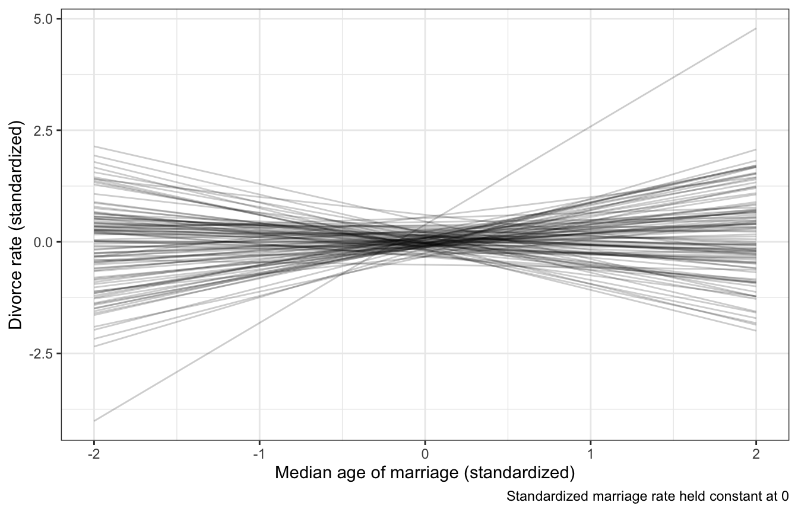

library(tidyverse)
library(brms)
library(tidybayes)
library(ggdag)
library(ggrepel)
library(patchwork)
# Plot stuff
clrs <- MetBrewer::met.brewer("Lakota", 6)
theme_set(theme_bw())
# Seed stuff
BAYES_SEED <- 1234
set.seed(1234)Video #5 code
Elemental confounds
\[ \newcommand{\ind}{\perp\!\!\!\perp} \newcommand{\notind}{\not\!\perp\!\!\!\perp} \]
The fork (confounders)
\[ X \leftarrow Z \rightarrow Y \]
\(Z\) connects \(X\) and \(Y\) so that \(Y \notind X\)
Simulated example
We can make some data to prove that they’re connected:
n <- 1000
fork_sim <- tibble(Z = rbinom(n, 1, prob = 0.5)) %>%
# When Z is 0, there's a 10% chance of X or Y being 1
# When Z is 1, there's a 90% chance of X or Y being 1
mutate(X = rbinom(n, 1, prob = ((1 - Z) * 0.1) + (Z * 0.9)),
Y = rbinom(n, 1, prob = ((1 - Z) * 0.1) + (Z * 0.9)))
fork_sim %>%
select(-Z) %>%
table()
## Y
## X 0 1
## 0 390 101
## 1 82 427
fork_sim %>%
summarize(cor = cor(X, Y))
## # A tibble: 1 × 1
## cor
## <dbl>
## 1 0.634But if we stratify by (or adjust for) \(Z\), we can see that \(Y \ind X \mid Z\):
fork_sim %>%
select(X, Y, Z) %>%
table()
## , , Z = 0
##
## Y
## X 0 1
## 0 388 56
## 1 36 2
##
## , , Z = 1
##
## Y
## X 0 1
## 0 2 45
## 1 46 425
fork_sim %>%
group_by(Z) %>%
summarize(cor = cor(X, Y))
## # A tibble: 2 × 2
## Z cor
## <int> <dbl>
## 1 0 -0.0609
## 2 1 -0.0546Here’s a continuous version too. When looking at all values of \(Z\), there’s a positive slope and relationship; when looking within each group, the relationship is 0 and flat.
n <- 300
fork_sim_cont <- tibble(Z = rbinom(n, 1, 0.5)) %>%
mutate(X = rnorm(n, 2 * Z - 1),
Y = rnorm(n, 2 * Z - 1))
ggplot(fork_sim_cont, aes(x = X, y = Y, color = factor(Z))) +
geom_point() +
geom_smooth(method = "lm") +
geom_smooth(aes(color = NULL), method = "lm")Waffle House example
data(WaffleDivorce, package = "rethinking")
WaffleDivorce <- WaffleDivorce %>%
mutate(across(c(Marriage, Divorce, MedianAgeMarriage), ~scale(.), .names = "{col}_scaled")) %>%
mutate(across(c(Marriage, Divorce, MedianAgeMarriage), ~as.numeric(scale(.)), .names = "{col}_z"))What is the causal effect of marriage on divorce?
height_sex_dag <- dagify(
x ~ z,
y ~ x + z,
exposure = "x",
outcome = "y",
labels = c(x = "Marriage", y = "Divorce", z = "Age"),
coords = list(x = c(x = 1, y = 3, z = 2),
y = c(x = 1, y = 1, z = 2))) %>%
tidy_dagitty() %>%
node_status()
ggplot(height_sex_dag, aes(x = x, y = y, xend = xend, yend = yend)) +
geom_dag_edges() +
geom_dag_point(aes(color = status)) +
geom_dag_text(aes(label = label), size = 3.5, color = "black") +
scale_color_manual(values = clrs[c(1, 4)], guide = "none") +
theme_dag()We can look at the relationship of all three of these arrows
ggplot(WaffleDivorce, aes(x = MedianAgeMarriage, y = Marriage)) +
geom_point(aes(fill = factor(South)), size = 4, pch = 21, color = "white") +
geom_smooth(method = "lm") +
geom_text_repel(aes(label = Loc), max.overlaps = 2) +
scale_fill_manual(values = clrs[c(1, 3)], guide = "none") +
labs(x = "Median age of marriage", y = "Marriage rate")ggplot(WaffleDivorce, aes(x = MedianAgeMarriage, y = Divorce)) +
geom_point(aes(fill = factor(South)), size = 4, pch = 21, color = "white") +
geom_smooth(method = "lm") +
geom_text_repel(aes(label = Loc), max.overlaps = 2) +
scale_fill_manual(values = clrs[c(1, 3)], guide = "none") +
labs(x = "Median age of marriage", y = "Divorce rate")ggplot(WaffleDivorce, aes(x = Marriage, y = Divorce)) +
geom_point(aes(fill = factor(South)), size = 4, pch = 21, color = "white") +
geom_smooth(method = "lm") +
geom_text_repel(aes(label = Loc), max.overlaps = 2) +
scale_fill_manual(values = clrs[c(1, 3)], guide = "none") +
labs(x = "Marriage rate", y = "Divorce rate")How do we stratify by a continuous variable though? Regression!
\[ \begin{aligned} D_i &\sim \mathcal{N}(\mu_i, \sigma) \\ \mu_i &= \alpha + \beta_M M_i + \beta_A A_i \end{aligned} \]
Prior predictive simulation
\[ \begin{aligned} D_i &\sim \mathcal{N}(\mu_i, \sigma) \\ \mu_i &= \alpha + \beta_M M_i + \beta_A A_i \\ \\ \alpha &\sim \mathcal{N}(0, 0.2) \\ \beta_M &\sim \mathcal{N}(0, 0.5) \\ \beta_A &\sim \mathcal{N}(0, 0.5) \\ \sigma &\sim \operatorname{Exponential}(1) \end{aligned} \]
priors <- c(prior(normal(0, 0.2), class = Intercept),
prior(normal(0, 0.5), class = b, coef = "Marriage_z"),
prior(normal(0, 0.5), class = b, coef = "MedianAgeMarriage_z"),
prior(exponential(1), class = sigma))
marriage_divorce_prior_only <- brm(
bf(Divorce_z ~ Marriage_z + MedianAgeMarriage_z),
data = WaffleDivorce,
family = gaussian(),
prior = priors,
sample_prior = "only",
chains = 4, cores = 4, seed = BAYES_SEED
)
## Compiling Stan program...
## Start samplingdraws_prior <- tibble(MedianAgeMarriage_z = seq(-2, 2, length.out = 100),
Marriage_z = 0) %>%
add_epred_draws(marriage_divorce_prior_only, ndraws = 100)
draws_prior %>%
ggplot(aes(x = MedianAgeMarriage_z, y = .epred)) +
geom_line(aes(group = .draw), alpha = 0.2) +
labs(x = "Median age of marriage (standardized)",
y = "Divorce rate (standardized)",
caption = "Standardized marriage rate held constant at 0")
Actual model
Based on these models,
Once we know median age at marriage for a state, there is little or no additional predictive power in also knowing the rate of marriage in that state. (p. 134)
priors <- c(prior(normal(0, 0.2), class = Intercept),
prior(normal(0, 0.5), class = b, coef = "Marriage_z"),
prior(normal(0, 0.5), class = b, coef = "MedianAgeMarriage_z"),
prior(exponential(1), class = sigma))
marriage_divorce_actual <- brm(
bf(Divorce_z ~ Marriage_z + MedianAgeMarriage_z),
data = WaffleDivorce,
family = gaussian(),
prior = priors,
chains = 4, cores = 4, seed = BAYES_SEED
)
## Compiling Stan program...
## recompiling to avoid crashing R session
## Start samplingprint(marriage_divorce_actual)
## Family: gaussian
## Links: mu = identity; sigma = identity
## Formula: Divorce_z ~ Marriage_z + MedianAgeMarriage_z
## Data: WaffleDivorce (Number of observations: 50)
## Draws: 4 chains, each with iter = 2000; warmup = 1000; thin = 1;
## total post-warmup draws = 4000
##
## Population-Level Effects:
## Estimate Est.Error l-95% CI u-95% CI Rhat Bulk_ESS Tail_ESS
## Intercept -0.00 0.10 -0.20 0.20 1.00 3824 2317
## Marriage_z -0.07 0.15 -0.36 0.24 1.00 3087 2922
## MedianAgeMarriage_z -0.62 0.16 -0.92 -0.31 1.00 2894 2655
##
## Family Specific Parameters:
## Estimate Est.Error l-95% CI u-95% CI Rhat Bulk_ESS Tail_ESS
## sigma 0.83 0.09 0.68 1.01 1.00 3630 2543
##
## Draws were sampled using sampling(NUTS). For each parameter, Bulk_ESS
## and Tail_ESS are effective sample size measures, and Rhat is the potential
## scale reduction factor on split chains (at convergence, Rhat = 1).# get_variables(marriage_divorce_actual)
marriage_divorce_actual %>%
gather_draws(b_Intercept, b_Marriage_z, b_MedianAgeMarriage_z, sigma) %>%
ggplot(aes(x = .value, y = fct_rev(.variable))) +
stat_halfeye() +
coord_cartesian(xlim = c(-1, 1))marriage_divorce_stan.stan
data {
int<lower=1> n; // Observations
vector[n] Divorce_z; // Outcome: divorce rate
vector[n] Marriage_z; // "Treatment": marriage rate
vector[n] MedianAgeMarriage_z; // Confounder: age
}
parameters {
real a;
real bM;
real bA;
real<lower=0> sigma;
}
transformed parameters {
vector[n] mu;
mu = a + bM*Marriage_z + bA*MedianAgeMarriage_z;
}
model {
// Likelihood
Divorce_z ~ normal(mu, sigma);
// Priors
a ~ normal(0, 0.2);
bM ~ normal(0, 0.5);
bA ~ normal(0, 0.5);
sigma ~ exponential(1);
}
generated quantities {
vector[n] Divorce_z_rep;
for (i in 1:n) {
Divorce_z_rep[i] = normal_rng(mu[i], sigma);
}
}stan_data <- WaffleDivorce %>%
select(Divorce_z, Marriage_z, MedianAgeMarriage_z) %>%
compose_data()
model_marriage_divorce_stan <- rstan::sampling(
object = marriage_divorce_stan,
data = stan_data,
iter = 2000, warmup = 1000, seed = BAYES_SEED, chains = 4, cores = 4
)print(model_marriage_divorce_stan,
pars = c("a", "bM", "bA", "sigma"))
## Inference for Stan model: 8cc6e06905b678b9147ee76469c82d06.
## 4 chains, each with iter=2000; warmup=1000; thin=1;
## post-warmup draws per chain=1000, total post-warmup draws=4000.
##
## mean se_mean sd 2.5% 25% 50% 75% 97.5% n_eff Rhat
## a 0.00 0 0.10 -0.19 -0.07 0.00 0.07 0.20 3754 1
## bM -0.06 0 0.15 -0.36 -0.17 -0.06 0.04 0.24 2518 1
## bA -0.61 0 0.15 -0.91 -0.71 -0.61 -0.51 -0.31 2568 1
## sigma 0.83 0 0.09 0.68 0.76 0.82 0.88 1.02 3049 1
##
## Samples were drawn using NUTS(diag_e) at Wed Sep 21 11:06:44 2022.
## For each parameter, n_eff is a crude measure of effective sample size,
## and Rhat is the potential scale reduction factor on split chains (at
## convergence, Rhat=1).# get_variables(model_marriage_divorce_stan)
model_marriage_divorce_stan %>%
gather_draws(a, bM, bA, sigma) %>%
mutate(.variable = factor(.variable, levels = c("a", "bM", "bA", "sigma"))) %>%
ggplot(aes(x = .value, y = fct_rev(.variable))) +
stat_halfeye() +
coord_cartesian(xlim = c(-1, 1))Simulating causal effects
We can make counterfactual plots if we model the whole system, just like the “full luxury Bayes” model from video 4.
We want to know the causal effect of the marriage rate on the divorce rate, or:
\[ E(\text{Divorce rate} \mid \operatorname{do}(\text{Marriage rate})) \]
Here’s model for the whole system:
\[ \begin{aligned} M_i &\sim \mathcal{N}(\nu_i, \tau) \\ D_i &\sim \mathcal{N}(\mu_i, \sigma) \\ \nu_i &= \alpha_M + \beta_{AM} A_i \\ \mu_i &= \alpha + \beta_M M_i + \beta_A A_i \\ \\ \alpha_M &\sim \mathcal{N}(0, 0.2) \\ \alpha &\sim \mathcal{N}(0, 0.2) \\ \beta_{AM} &\sim \mathcal{N}(0, 0.5) \\ \beta_M &\sim \mathcal{N}(0, 0.5) \\ \beta_A &\sim \mathcal{N}(0, 0.5) \\ \tau &\sim \operatorname{Exponential}(1) \\ \sigma &\sim \operatorname{Exponential}(1) \end{aligned} \]
priors <- c(prior(normal(0, 0.2), class = Intercept, resp = Divorcez),
prior(normal(0, 0.5), class = b, coef = "Marriage_z", resp = Divorcez),
prior(normal(0, 0.5), class = b, coef = "MedianAgeMarriage_z", resp = Divorcez),
prior(exponential(1), class = sigma, resp = Divorcez),
prior(normal(0, 0.2), class = Intercept, resp = Marriagez),
prior(normal(0, 0.5), class = b, coef = "MedianAgeMarriage_z", resp = Marriagez),
prior(exponential(1), class = sigma, resp = Marriagez))
model_dag_full <- brm(
bf(Divorce_z ~ Marriage_z + MedianAgeMarriage_z) +
bf(Marriage_z ~ MedianAgeMarriage_z) +
set_rescor(FALSE),
data = WaffleDivorce,
family = gaussian(),
prior = priors,
chains = 4, cores = 4, seed = BAYES_SEED
)
## Compiling Stan program...
## Start samplingprint(model_dag_full)
## Family: MV(gaussian, gaussian)
## Links: mu = identity; sigma = identity
## mu = identity; sigma = identity
## Formula: Divorce_z ~ Marriage_z + MedianAgeMarriage_z
## Marriage_z ~ MedianAgeMarriage_z
## Data: WaffleDivorce (Number of observations: 50)
## Draws: 4 chains, each with iter = 2000; warmup = 1000; thin = 1;
## total post-warmup draws = 4000
##
## Population-Level Effects:
## Estimate Est.Error l-95% CI u-95% CI Rhat
## Divorcez_Intercept 0.00 0.10 -0.20 0.19 1.00
## Marriagez_Intercept 0.00 0.09 -0.18 0.19 1.00
## Divorcez_Marriage_z -0.06 0.16 -0.36 0.25 1.00
## Divorcez_MedianAgeMarriage_z -0.61 0.16 -0.91 -0.29 1.00
## Marriagez_MedianAgeMarriage_z -0.69 0.10 -0.89 -0.48 1.00
## Bulk_ESS Tail_ESS
## Divorcez_Intercept 5471 2861
## Marriagez_Intercept 5718 2909
## Divorcez_Marriage_z 3565 3160
## Divorcez_MedianAgeMarriage_z 3484 2710
## Marriagez_MedianAgeMarriage_z 4943 2673
##
## Family Specific Parameters:
## Estimate Est.Error l-95% CI u-95% CI Rhat Bulk_ESS Tail_ESS
## sigma_Divorcez 0.83 0.09 0.68 1.02 1.00 4322 2680
## sigma_Marriagez 0.71 0.07 0.58 0.87 1.00 4992 3220
##
## Draws were sampled using sampling(NUTS). For each parameter, Bulk_ESS
## and Tail_ESS are effective sample size measures, and Rhat is the potential
## scale reduction factor on split chains (at convergence, Rhat = 1).sim_age_divorce <- tibble(MedianAgeMarriage_z = seq(from = -2, to = 2, length.out = 40),
Marriage_z = 0) %>%
add_predicted_draws(model_dag_full, resp = "Divorcez")
ggplot(sim_age_divorce, aes(x = MedianAgeMarriage_z, y = .prediction)) +
stat_lineribbon(.width = 0.89, color = clrs[5], fill = clrs[5], alpha = 0.5) +
labs(title = "Total counterfactual effect of age on divorce rate",
subtitle = "A → D in the DAG")sim_age_marriage <- tibble(MedianAgeMarriage_z = seq(from = -2, to = 2, length.out = 40)) %>%
add_predicted_draws(model_dag_full, resp = "Marriagez")
ggplot(sim_age_marriage, aes(x = MedianAgeMarriage_z, y = .prediction)) +
stat_lineribbon(.width = 0.89, color = clrs[6], fill = clrs[6], alpha = 0.5) +
labs(title = "Counterfactual effect of age on marriage rate",
subtitle = "A → M in the DAG")sim_age_marriage_divorce <- tibble(Marriage_z = seq(from = -2, to = 2, length.out = 40),
MedianAgeMarriage_z = 0) %>%
add_predicted_draws(model_dag_full, resp = "Marriagez")
ggplot(sim_age_marriage_divorce, aes(x = Marriage_z, y = .prediction)) +
stat_lineribbon(.width = 0.89, color = clrs[3], fill = clrs[3], alpha = 0.5) +
labs(title = "Total counterfactual effect of marriage rate on divorce rate",
subtitle = "M → D, after adjusting for A in the DAG, or E(D | do(M))")marriage_dag_full_stan.stan
data {
int<lower=1> n; // Observations
vector[n] Divorce_z; // Outcome: divorce rate
vector[n] Marriage_z; // "Treatment": marriage rate
vector[n] MedianAgeMarriage_z; // Confounder: age
}
parameters {
// Age -> Marriage
real aM;
real bAM;
real<lower=0> tau;
// Age -> Divorce <- Marriage
real a;
real bM;
real bA;
real<lower=0> sigma;
}
model {
vector[n] nu;
vector[n] mu;
// Age -> Marriage
aM ~ normal(0, 0.2);
bAM ~ normal(0, 0.5);
tau ~ exponential(1);
nu = aM + bAM*MedianAgeMarriage_z;
Marriage_z ~ normal(nu, tau);
// Age -> Divorce <- Marriage
a ~ normal(0, 0.2);
bM ~ normal(0, 0.5);
bA ~ normal(0, 0.5);
sigma ~ exponential(1);
mu = a + bM*Marriage_z + bA*MedianAgeMarriage_z;
Divorce_z ~ normal(mu, sigma);
}
generated quantities {
vector[n] Divorce_z_rep;
vector[n] Marriage_z_rep;
vector[n] divorce_do_marriage;
for (i in 1:n) {
real nu_hat_n = aM + bAM*MedianAgeMarriage_z[i];
real mu_hat_n = a + bM*Marriage_z[i] + bA*MedianAgeMarriage_z[i];
Marriage_z_rep[i] = normal_rng(nu_hat_n, tau);
Divorce_z_rep[i] = normal_rng(mu_hat_n, sigma);
divorce_do_marriage[i] = normal_rng(a + bM*Marriage_z_rep[i] + bA*0, sigma);
}
}stan_data <- WaffleDivorce %>%
select(Divorce_z, Marriage_z, MedianAgeMarriage_z) %>%
compose_data()
model_marriage_dag_full_stan <- rstan::sampling(
object = marriage_dag_full_stan,
data = stan_data,
iter = 2000, warmup = 1000, seed = BAYES_SEED, chains = 4, cores = 4
)print(model_marriage_dag_full_stan,
pars = c("aM", "bAM", "tau", "a", "bM", "bA", "sigma"))
## Inference for Stan model: ea32b2c9a1ab179009a8845d85ea5d42.
## 4 chains, each with iter=2000; warmup=1000; thin=1;
## post-warmup draws per chain=1000, total post-warmup draws=4000.
##
## mean se_mean sd 2.5% 25% 50% 75% 97.5% n_eff Rhat
## aM 0.00 0 0.09 -0.18 -0.07 0.00 0.06 0.18 5552 1
## bAM -0.69 0 0.10 -0.88 -0.75 -0.69 -0.63 -0.50 5583 1
## tau 0.71 0 0.08 0.58 0.66 0.70 0.76 0.88 5465 1
## a 0.00 0 0.10 -0.20 -0.07 0.00 0.07 0.20 5541 1
## bM -0.06 0 0.16 -0.37 -0.17 -0.06 0.05 0.25 2842 1
## bA -0.61 0 0.16 -0.92 -0.71 -0.61 -0.50 -0.29 3314 1
## sigma 0.83 0 0.09 0.68 0.77 0.82 0.88 1.03 5675 1
##
## Samples were drawn using NUTS(diag_e) at Wed Sep 21 11:07:06 2022.
## For each parameter, n_eff is a crude measure of effective sample size,
## and Rhat is the potential scale reduction factor on split chains (at
## convergence, Rhat=1).stan_age_divorce <- model_marriage_dag_full_stan %>%
spread_draws(Divorce_z_rep[i]) %>%
mean_hdci() %>%
mutate(age = WaffleDivorce$MedianAgeMarriage_z)
ggplot(stan_age_divorce, aes(x = age, y = Divorce_z_rep)) +
geom_line(color = clrs[5]) +
geom_ribbon(aes(ymin = .lower, ymax = .upper), alpha = 0.2, fill = clrs[5]) +
coord_cartesian(xlim = c(-2, 2)) +
labs(title = "Total counterfactual effect of age on divorce rate",
subtitle = "A → D in the DAG")stan_age_marriage <- model_marriage_dag_full_stan %>%
spread_draws(Marriage_z_rep[i]) %>%
mean_hdci() %>%
mutate(age = WaffleDivorce$MedianAgeMarriage_z)
ggplot(stan_age_marriage, aes(x = age, y = Marriage_z_rep)) +
geom_line(color = clrs[6]) +
geom_ribbon(aes(ymin = .lower, ymax = .upper), alpha = 0.2, fill = clrs[6]) +
coord_cartesian(xlim = c(-2, 2)) +
labs(title = "Counterfactual effect of age on marriage rate",
subtitle = "A → M in the DAG")stan_age_marriage_divorce <- model_marriage_dag_full_stan %>%
spread_draws(divorce_do_marriage[i]) %>%
mean_hdci() %>%
mutate(age = WaffleDivorce$MedianAgeMarriage_z)
ggplot(stan_age_marriage_divorce, aes(x = age, y = divorce_do_marriage)) +
geom_line(color = clrs[3]) +
geom_ribbon(aes(ymin = .lower, ymax = .upper), alpha = 0.2, fill = clrs[3]) +
coord_cartesian(xlim = c(-2, 2)) +
labs(title = "Total counterfactual effect of marriage rate on divorce rate",
subtitle = "M → D, after adjusting for A in the DAG, or E(D | do(M))")The pipe (mediators)
\[ X \rightarrow Z \rightarrow Y \]
\(X\) and \(Y\) are associated (\(Y \notind X\)) because influence of \(X\) is passed to \(Y\) through \(Z\). After adjusting for \(Z\), though, there’s no association, or \(Y \ind X \mid Z\).
Simulated example
n <- 1000
pipe_sim <- tibble(X = rbinom(n, 1, prob = 0.5)) %>%
# When X is 0, there's a 10% chance of Z being 1
# When X is 1, there's a 90% chance of Z being 1
# When Z is 0, there's a 10% chance of Y being 1
# When Z is 1, there's a 90% chance of Y being 1
mutate(Z = rbinom(n, 1, prob = ((1 - X) * 0.1) + (X * 0.9)),
Y = rbinom(n, 1, prob = ((1 - Z) * 0.1) + (Z * 0.9)))
pipe_sim %>%
select(-Z) %>%
table()
## Y
## X 0 1
## 0 403 92
## 1 73 432
pipe_sim %>%
summarize(cor = cor(X, Y))
## # A tibble: 1 × 1
## cor
## <dbl>
## 1 0.670But if we adjust for \(Z\), \(Y \ind X \mid Z\):
pipe_sim %>%
select(X, Y, Z) %>%
table()
## , , Z = 0
##
## Y
## X 0 1
## 0 401 58
## 1 33 4
##
## , , Z = 1
##
## Y
## X 0 1
## 0 2 34
## 1 40 428
pipe_sim %>%
group_by(Z) %>%
summarize(cor = cor(X, Y))
## # A tibble: 2 × 2
## Z cor
## <int> <dbl>
## 1 0 -0.0145
## 2 1 -0.0279This also works with continuous data. When looking at all values of \(Z\), there’s a positive slope and relationship; when looking within each group, the relationship is 0 and flat.
n <- 300
pipe_sim_cont <- tibble(X = rnorm(n, 0, 1)) %>%
mutate(Z = rbinom(n, 1, plogis(X)),
Y = rnorm(n, (2 * Z - 1), 1))
ggplot(pipe_sim_cont, aes(x = X, y = Y, color = factor(Z))) +
geom_point() +
geom_smooth(method = "lm") +
geom_smooth(aes(color = NULL), method = "lm")Fungus experiment example
With this DAG, we shouldn’t adjust for \(F\), since that would block the effect of the fungus, which in this case is super important since the causal mechanism pretty much only flows through \(F\). If we adjust for \(F\), we’ll get the causal effect of the treatment on height without the effect of the fungus, which is weird and probably 0.
plant_fungus_dag <- dagify(
h1 ~ t + f + h0,
f ~ t,
exposure = "t",
outcome = "h1",
labels = c(t = "Treatment", h1 = "Height, t=1", f = "Fungus", h0 = "Height, t=0"),
coords = list(x = c(t = 1, h1 = 3, f = 2, h0 = 3),
y = c(t = 1, h1 = 1, f = 2, h0 = 2))) %>%
tidy_dagitty() %>%
node_status()
ggplot(plant_fungus_dag, aes(x = x, y = y, xend = xend, yend = yend)) +
geom_dag_edges() +
geom_dag_point(aes(color = status)) +
geom_dag_text(aes(label = label), size = 3.5, color = "black") +
scale_color_manual(values = clrs[c(1, 4)], guide = "none") +
theme_dag()In general this is called post-treatment bias and it is bad.
The collider (colliders, obvs)
\[ X \rightarrow Z \leftarrow Y \]
\(X\) and \(Y\) are not associated (\(Y \ind X\)), but they both influence \(Z\). Once you adjust for \(Z\), \(X\) and \(Y\) become associated and \(Y \notind X \mid Z\).
When we learn about \(Z\) (or stratify by \(Z\), or only look at specific values of \(Z\)), we necessarily learn something about \(X\) and \(Y\), since they helped generate \(Z\)
Simulated example
n <- 1000
collider_sim <- tibble(X = rbinom(n, 1, prob = 0.5),
Y = rbinom(n, 1, prob = 0.5)) %>%
# If either X and Y are 1, there's a 90% chance that Z will be 1
mutate(Z = rbinom(n, 1, prob = ifelse(X + Y > 0, 0.9, 0.2)))
# These are independent
collider_sim %>%
select(-Z) %>%
table()
## Y
## X 0 1
## 0 248 253
## 1 240 259
# No correlation
collider_sim %>%
summarize(cor = cor(X, Y))
## # A tibble: 1 × 1
## cor
## <dbl>
## 1 0.0141When we adjust for \(Z\), though, \(Y \notind X \mid Z\):
collider_sim %>%
select(X, Y, Z) %>%
table()
## , , Z = 0
##
## Y
## X 0 1
## 0 206 25
## 1 27 17
##
## , , Z = 1
##
## Y
## X 0 1
## 0 42 228
## 1 213 242
# They're correlated!
collider_sim %>%
group_by(Z) %>%
summarize(cor = cor(X, Y))
## # A tibble: 2 × 2
## Z cor
## <int> <dbl>
## 1 0 0.283
## 2 1 -0.316As with the others, this works with continuous data too. When ignoring values of \(Z\), there’s no relationship between \(X\) and \(Y\). But once we adjust for or stratify by \(Z\), there’s a relationship within each group.
n <- 300
collider_sim_cont <- tibble(X = rnorm(n, 0, 1),
Y = rnorm(n, 0, 1)) %>%
mutate(Z = rbinom(n, 1, plogis(2*X + 2*Y - 2)))
ggplot(collider_sim_cont, aes(x = X, y = Y, color = factor(Z))) +
geom_point() +
geom_smooth(method = "lm") +
geom_smooth(aes(color = NULL), method = "lm")Grant selection example
set.seed(1914)
n <- 200
grants <- tibble(newsworthiness = rnorm(n, 0, 1),
trustworthiness = rnorm(n, 0, 1)) %>%
mutate(total = newsworthiness + trustworthiness) %>%
# Select just the top 10%
mutate(q = quantile(total, 1 - 0.1)) %>%
mutate(selected = total >= q)
# No relationship
grants %>%
summarize(cor = cor(newsworthiness, trustworthiness))
## # A tibble: 1 × 1
## cor
## <dbl>
## 1 -0.0672
# Relationship!
grants %>%
group_by(selected) %>%
summarize(cor = cor(newsworthiness, trustworthiness))
## # A tibble: 2 × 2
## selected cor
## <lgl> <dbl>
## 1 FALSE -0.274
## 2 TRUE -0.768
ggplot(grants, aes(x = newsworthiness, y = trustworthiness, color = selected)) +
geom_point() +
geom_smooth(data = filter(grants, selected), method = "lm") +
geom_smooth(aes(color = "Full sample"), method = "lm")The descendant
Like a confounder if it comes from a confounder; like a mediator if it comes from a mediator; like a collider if it comes from a collider.
\(X\) and \(Y\) are causally associated through \(Z\), which implies that \(Y \notind X\). \(A\) contains information about \(Z\), so once we stratify by or adjust for \(A\), \(X\) and \(Y\) become less associated (if \(A\) is strong enough), implying \(Y \ind X \mid A\)
That can be good (if \(A\) is confounder-flavored) or bad (if \(A\) is mediator- or collider-flavored).
desc_confounder_dag <- dagify(
Y ~ Z,
X ~ Z,
A ~ Z,
coords = list(x = c(X = 1, Y = 3, Z = 2, A = 2),
y = c(X = 1, Y = 1, Z = 1, A = 0))) %>%
tidy_dagitty()
desc_mediator_dag <- dagify(
Y ~ Z,
Z ~ X,
A ~ Z,
coords = list(x = c(X = 1, Y = 3, Z = 2, A = 2),
y = c(X = 1, Y = 1, Z = 1, A = 0))) %>%
tidy_dagitty()
desc_collider_dag <- dagify(
Z ~ X + Y,
A ~ Z,
coords = list(x = c(X = 1, Y = 3, Z = 2, A = 2),
y = c(X = 1, Y = 1, Z = 1, A = 0))) %>%
tidy_dagitty()
plot_desc_confounder <- ggplot(desc_confounder_dag,
aes(x = x, y = y, xend = xend, yend = yend)) +
geom_dag_edges() +
geom_dag_point() +
geom_dag_text(aes(label = name), size = 3.5, color = "white") +
ylim(c(-0.25, 1.25)) +
labs(subtitle = "Confounder-flavored descendant") +
theme_dag() +
theme(plot.subtitle = element_text(hjust = 0.5, face = "bold"))
plot_desc_mediator <- ggplot(desc_mediator_dag,
aes(x = x, y = y, xend = xend, yend = yend)) +
geom_dag_edges() +
geom_dag_point() +
geom_dag_text(aes(label = name), size = 3.5, color = "white") +
ylim(c(-0.25, 1.25)) +
labs(subtitle = "Mediator-flavored descendant") +
theme_dag() +
theme(plot.subtitle = element_text(hjust = 0.5, face = "bold"))
plot_desc_collider <- ggplot(desc_collider_dag,
aes(x = x, y = y, xend = xend, yend = yend)) +
geom_dag_edges() +
geom_dag_point() +
geom_dag_text(aes(label = name), size = 3.5, color = "white") +
ylim(c(-0.25, 1.25)) +
labs(subtitle = "Collider-flavored descendant") +
theme_dag() +
theme(plot.subtitle = element_text(hjust = 0.5, face = "bold"))
plot_desc_confounder + plot_desc_mediator + plot_desc_collider